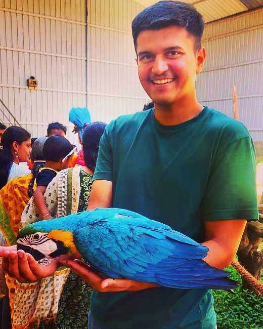
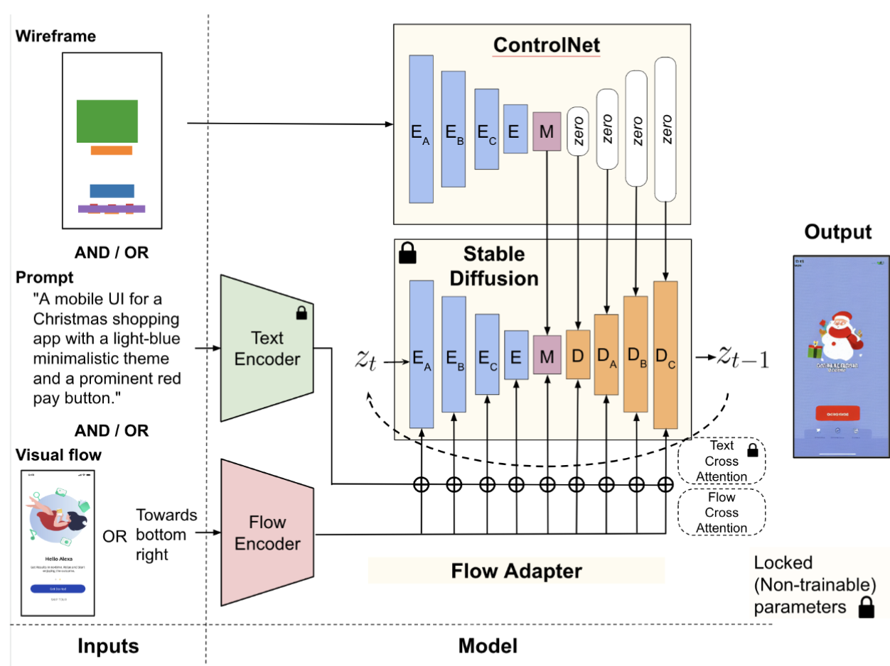
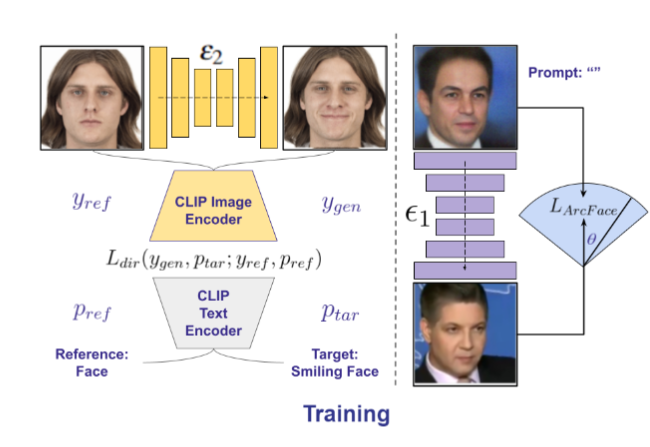
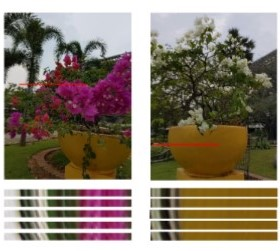
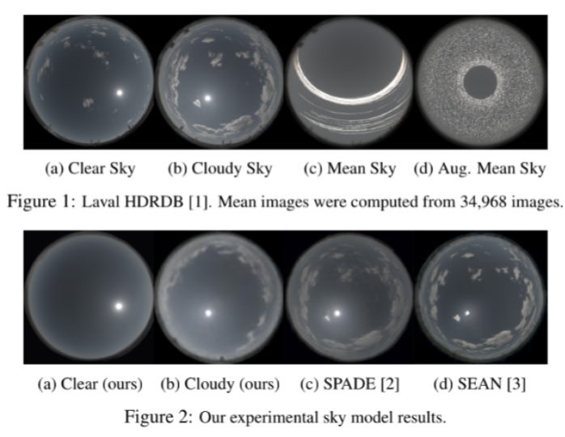

|
Aryan Garg Currently, I'm a first year Computer Science PhD student at UW-Madison, advised by Professor Mohit Gupta. For the summer of '24, I interned at the Computational Behaviour Lab directed by Prof. Antti Oulasvirta at Aalto University. I was extremely fortunate to have close support from Dr. Yue Jiang. Additionally, I'm incredibly lucky to have met and made close-friends with Julian Fabinc and Noemi Ippolito. Last, I was a Bosch AI Research Fellow at the Computational Imaging Lab directed by Prof. Kaushik Mitra at the Indian Institute of Technology, Madras. In a past life, I finished my Bachelor's in Computer Science at IIT Mandi, where I was advised by Prof. Renu Rameshan. During my junior year, I had the privilege of being advised by Prof. Jean-François Lalonde and Dr. Yannick Hold-Geoffroy while spending a MITACS summer at Université Laval in the beautiful Quebec City. Apart from research and academic services, I enjoy reading 📚, traveling ✈️, endurance sports 🚴♂️, playing the electric guitar and trekking 🏔️. My previous trek (8th) was Sandakphu-Phalut in the Himalayas overlooking the majestic sleeping Buddha. |
 |
{kind=link}
Research InterestsMy main focus is on deep generative modeling and 3D scene reconstruction. Outside of that, I also enjoy going on side quests 🗡️ to push the boundaries of core machine learning. |

|
News
|
Publications
|

|
Controllable GUI Exploration
Aryan Garg, Yue Jiang, Antti Oulasvirta Preprint, 2025 arXiv Diffusion for automatic GUI designing & ideation |
|

|
IP-FaceDiff: Identity-Preserving Facial Video Editing with Diffusion
Tharun Anand, Aryan Garg, Kaushik Mitra WACV-W, 2025 🇺🇸 arXiv IP-FaceDiff: Identity-Preserving Facial Video Editing with Diffusion |

|
HDRSplat: Gaussian Splatting for High Dynamic Range 3D Scene Reconstruction from Raw Images
Shreyas Singh*, Aryan Garg*, Kaushik Mitra BMVC, 2024 🇬🇧 Project Page / arXiv High Dynamic Range 3D Gaussian Splatting At Night |
|

|
Stereo-Knowledge Distillation from dpMV to Dual Pixels for Light Field Video Reconstruction
Aryan Garg, Raghav Mallampali, Akshat Joshi, Shrisudhan Govindarajan, Kaushik Mitra ICCP, 2024 🇨🇭 GitHub / arXiv Stereo Knowledge Distillation for dp-disparity estimation, dpMV dataset, and LFVR. |

|
Parameter and Data Efficient Spectral Style DCGAN
Aryan Garg ICLR Tiny Paper,2024 Oral Presentation 🇦🇹 GitHub / arXiv / OpenReview Unconditional face generation at the speed and size of DCGAN using a relatively tiny training dataset (~4000). Convergence and higher fidelity over StyleGAN are achieved using a spectrally normalized discriminator and a tiny generator within 20 minutes on a commercial, free cloud GPU. |

|
G-PECNet: Towards a Generalizable Pedestrian Trajectory Prediction System
Aryan Garg, Renu Rameshan ICLR Tiny Paper, 2024 Oral Presentation 🇦🇹 GitHub / arXiv / OpenReview Synthetic dataset generation and sinusoidal activations lead to a winning solution over the final displacement error. |
|

|
Re-envisioning Sky Models
Ian J. Maquignaz, Lucas Valença, Aryan Garg, Yannick Hold Geoffroy, Julien Philip, Jean Francois Lalonde Semaine numériQC, 2023 🇨🇦 3rd Best Presentation Award SkyNet for user-controlled generation of skies incorporating the versatility of parametric models and realism from deep generative networks. |

|
DeepSky
Ian J. Maquignaz, Aryan Garg, Yannick Hold Geoffroy, Julien Philip, Jean Francois Lalonde Symposium IA Montréal, 2022 🇨🇦 Poster / Abstract DeepSky: Learning to generate photorealistic skies per user-controlled positioning of solar and atmospheric components |
Academic ServicesReviewer For:
Teaching Assistant
|
More Socials |
|
Website template was |